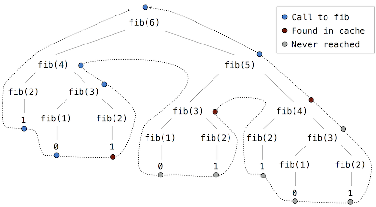

<!DOCTYPE html>
<html xmlns="http://www.w3.org/1999/xhtml" lang="sr"></html>
  <head>
    <meta charset="utf-8" />
    <meta name="viewport" content="width=device-width, initial-scale=1.0" />
<title>Ефикасност &#8212; Компоновање рачунарских програма</title>
    <link rel="stylesheet" href="../_static/pygments.css" type="text/css" />
    <link rel="stylesheet" href="../_static/basic.css" type="text/css" />
    <link rel="stylesheet" type="text/css" href="../_static/fitb.css" />
    <link rel="stylesheet" type="text/css" href="../_static/parsons.css" />
    <link rel="stylesheet" type="text/css" href="../_static/lib/prettify.css" />
    <link rel="stylesheet" type="text/css" href="../_static/showEval.css" />
    <link rel="stylesheet" type="text/css" href="../_static/activecode.css" />
    <link rel="stylesheet" type="text/css" href="../_static/codemirror.css" />
    <link rel="stylesheet" type="text/css" href="../_static/matrixeq.css" />
    <link rel="stylesheet" type="text/css" href="../_static/pytutor.css" />
    <link rel="stylesheet" type="text/css" href="../_static/modal-basic.css" />
    <link rel="stylesheet" type="text/css" href="../_static/datafile.css" />
    <link rel="stylesheet" type="text/css" href="../_static/webgldemo.css" />
    <link rel="stylesheet" type="text/css" href="../_static/webglinteractive.css" />
    <link rel="stylesheet" type="text/css" href="https://stackpath.bootstrapcdn.com/bootstrap/4.2.1/css/bootstrap.min.css" />
    <link rel="stylesheet" type="text/css" href="../_static/video.css" />
    <link rel="stylesheet" type="text/css" href="../_static/dragndrop.css" />
    <link rel="stylesheet" type="text/css" href="../_static/poll.css" />
    <link rel="stylesheet" type="text/css" href="../_static/clickable.css" />
    <link rel="stylesheet" type="text/css" href="../_static/tabbedstuff.css" />
    <link rel="stylesheet" type="text/css" href="../_static/karel.css" />
    <link rel="stylesheet" type="text/css" href="../_static/notes.css" />
    <link rel="stylesheet" type="text/css" href="../_static/simanim.css" />
    <link rel="stylesheet" type="text/css" href="../_static/pycode.css" />
    <link rel="stylesheet" type="text/css" href="../_static/p5js.css" />
    <link rel="stylesheet" type="text/css" href="../_static/gallery.css" />
    <link rel="stylesheet" type="text/css" href="../_static/dbDirective.css" />
    <link rel="stylesheet" href="../_static/user-highlights.css" type="text/css" />
    <link rel="stylesheet" href="https://use.fontawesome.com/releases/v5.1.1/css/all.css" type="text/css" />
    <link rel="stylesheet" href="../_static/bootstrap-4.0.0-dist/css/bootstrap.min.css" type="text/css" />
    <link rel="stylesheet" href="../_static/flatly.min.css" type="text/css" />
    <link rel="stylesheet" href="../_static/petlja-runestone.css" type="text/css" />
    <link rel="stylesheet" href="../_staticnbstyle.css" type="text/css" />
    <script id="documentation_options" data-url_root="../" src="../_static/documentation_options.js"></script>
    <script type="text/javascript" src="../_static/runestonebase.js"></script>
    <script type="text/javascript" src="../_static/skulpt-stdlib.js"></script>
    <script type="text/javascript" src="../_static/skulpt.min.js"></script>
    <script type="text/javascript" src="../_static/jquery.js"></script>
    <script type="text/javascript" src="../_static/underscore.js"></script>
    <script type="text/javascript" src="../_static/doctools.js"></script>
    <script type="text/javascript" src="../_static/language_data.js"></script>
    <script type="text/javascript" src="../_static/fitb.js"></script>
    <script type="text/javascript" src="../_static/timedfitb.js"></script>
    <script type="text/javascript" src="../_static/jquery_i18n/CLDRPluralRuleParser.js"></script>
    <script type="text/javascript" src="../_static/jquery_i18n/jquery.i18n.js"></script>
    <script type="text/javascript" src="../_static/jquery_i18n/jquery.i18n.messagestore.js"></script>
    <script type="text/javascript" src="../_static/jquery_i18n/jquery.i18n.fallbacks.js"></script>
    <script type="text/javascript" src="../_static/jquery_i18n/jquery.i18n.language.js"></script>
    <script type="text/javascript" src="../_static/jquery_i18n/jquery.i18n.parser.js"></script>
    <script type="text/javascript" src="../_static/jquery_i18n/jquery.i18n.emitter.js"></script>
    <script type="text/javascript" src="../_static/jquery_i18n/jquery.i18n.emitter.bidi.js"></script>
    <script type="text/javascript" src="../_static/fitb-i18n.en.js"></script>
    <script type="text/javascript" src="../_static/fitb-i18n.sr.js"></script>
    <script type="text/javascript" src="../_static/lib/prettify.js"></script>
    <script type="text/javascript" src="../_static/lib/hammer.min.js"></script>
    <script type="text/javascript" src="../_static/parsons.js"></script>
    <script type="text/javascript" src="../_static/parsons-i18n.en.js"></script>
    <script type="text/javascript" src="../_static/parsons-i18n.sr.js"></script>
    <script type="text/javascript" src="../_static/timedparsons.js"></script>
    <script type="text/javascript" src="../_static/showEval.js"></script>
    <script type="text/javascript" src="../_static/jquery.highlight.js"></script>
    <script type="text/javascript" src="../_static/bookfuncs.js"></script>
    <script type="text/javascript" src="../_static/codemirror.js"></script>
    <script type="text/javascript" src="../_static/xml.js"></script>
    <script type="text/javascript" src="../_static/css.js"></script>
    <script type="text/javascript" src="../_static/python.js"></script>
    <script type="text/javascript" src="../_static/htmlmixed.js"></script>
    <script type="text/javascript" src="../_static/javascript.js"></script>
    <script type="text/javascript" src="../_static/activecode-i18n.en.js"></script>
    <script type="text/javascript" src="../_static/activecode-i18n.sr.js"></script>
    <script type="text/javascript" src="../_static/activecode.js"></script>
    <script type="text/javascript" src="../_static/clike.js"></script>
    <script type="text/javascript" src="../_static/timed_activecode.js"></script>
    <script type="text/javascript" src="../_static/matrixeq.js"></script>
    <script type="text/javascript" src="../_static/reveal.js"></script>
    <script type="text/javascript" src="../_static/d3.v2.min.js"></script>
    <script type="text/javascript" src="../_static/jquery.ba-bbq.min.js"></script>
    <script type="text/javascript" src="../_static/jquery.jsPlumb-1.3.10-all-min.js"></script>
    <script type="text/javascript" src="../_static/pytutor.js"></script>
    <script type="text/javascript" src="../_static/codelens.js"></script>
    <script type="text/javascript" src="../_static/skulpt.min.js"></script>
    <script type="text/javascript" src="../_static/skulpt-stdlib.js"></script>
    <script type="text/javascript" src="../_static/datafile.js"></script>
    <script type="text/javascript" src="../_static/shortanswer.js"></script>
    <script type="text/javascript" src="../_static/timed_shortanswer.js"></script>
    <script type="text/javascript" src="../_static/animationbase.js"></script>
    <script type="text/javascript" src="../_static/webglinteractive.js"></script>
    <script type="text/javascript" src="../_static/FileSaver.min.js"></script>
    <script type="text/javascript" src="../_static/Blob.js"></script>
    <script type="text/javascript" src="../_static/runestonevideo.js"></script>
    <script type="text/javascript" src="../_static/dragndrop.js"></script>
    <script type="text/javascript" src="../_static/timeddnd.js"></script>
    <script type="text/javascript" src="../_static/dragndrop-i18n.en.js"></script>
    <script type="text/javascript" src="../_static/dragndrop-i18n.sr.js"></script>
    <script type="text/javascript" src="../_static/mchoice.js"></script>
    <script type="text/javascript" src="../_static/timedmc.js"></script>
    <script type="text/javascript" src="../_static/timed.js"></script>
    <script type="text/javascript" src="../_static/mchoice-i18n.en.js"></script>
    <script type="text/javascript" src="../_static/mchoice-i18n.sr.js"></script>
    <script type="text/javascript" src="../_static/poll.js"></script>
    <script type="text/javascript" src="../_static/clickable.js"></script>
    <script type="text/javascript" src="../_static/timedclickable.js"></script>
    <script type="text/javascript" src="../_static/tabbedstuff.js"></script>
    <script type="text/javascript" src="../_static/karelCorner.js"></script>
    <script type="text/javascript" src="../_static/karelRobot.js"></script>
    <script type="text/javascript" src="../_static/karelWorld.js"></script>
    <script type="text/javascript" src="../_static/karelRobotDrawer.js"></script>
    <script type="text/javascript" src="../_static/karelUI.js"></script>
    <script type="text/javascript" src="../_static/karel.js"></script>
    <script type="text/javascript" src="../_static/karel-i18n.en.js"></script>
    <script type="text/javascript" src="../_static/notes.js"></script>
    <script type="text/javascript" src="../_static/pygamelib-init.js"></script>
    <script type="text/javascript" src="../_static/blockly/blockly_compressed.js"></script>
    <script type="text/javascript" src="../_static/blockly/blocks_compressed.js"></script>
    <script type="text/javascript" src="../_static/blockly/python_compressed.js"></script>
    <script type="text/javascript" src="../_static/blockly/msg-sr.js"></script>
    <script type="text/javascript" src="../_static/blockpy/utilities.js"></script>
    <script type="text/javascript" src="../_static/blockpy/python_errors.js"></script>
    <script type="text/javascript" src="../_static/blockpy/ast_node_visitor.js"></script>
    <script type="text/javascript" src="../_static/blockpy/abstract_interpreter.js"></script>
    <script type="text/javascript" src="../_static/blockpy/pytifa.js"></script>
    <script type="text/javascript" src="../_static/blockpy/abstract_interpreter_definitions.js"></script>
    <script type="text/javascript" src="../_static/blockpy/python_to_blockly.js"></script>
    <script type="text/javascript" src="../_static/blockpy/imported.js"></script>
    <script type="text/javascript" src="../_static/blockpy/blocks/class.js"></script>
    <script type="text/javascript" src="../_static/blockpy/blocks/comment.js"></script>
    <script type="text/javascript" src="../_static/blockpy/blocks/comprehensions.js"></script>
    <script type="text/javascript" src="../_static/blockpy/blocks/dict.js"></script>
    <script type="text/javascript" src="../_static/blockpy/blocks/if.js"></script>
    <script type="text/javascript" src="../_static/blockpy/blocks/io.js"></script>
    <script type="text/javascript" src="../_static/blockpy/blocks/lists.js"></script>
    <script type="text/javascript" src="../_static/blockpy/blocks/sets.js"></script>
    <script type="text/javascript" src="../_static/blockpy/blocks/loops.js"></script>
    <script type="text/javascript" src="../_static/blockpy/blocks/parking.js"></script>
    <script type="text/javascript" src="../_static/blockpy/blocks/tuple.js"></script>
    <script type="text/javascript" src="../_static/blockpy/blocks/turtles.js"></script>
    <script type="text/javascript" src="../_static/blockpy/blocks/text.js"></script>
    <script type="text/javascript" src="../_static/blockpy-modal.js"></script>
    <script type="text/javascript" src="../_static/simanim.js"></script>
    <script type="text/javascript" src="https://cdn.jsdelivr.net/pyodide/v0.16.1/full/pyodide.js"></script>
    <script type="text/javascript" src="../_static/pycode.js"></script>
    <script type="text/javascript" src="//toolness.github.io/p5.js-widget/p5-widget.js"></script>
    <script type="text/javascript" src="../_static/p5js.js"></script>
    <script type="text/javascript" src="../_static/gallery.js"></script>
    <script type="text/javascript" src="../_static/dbDirective.js"></script>
    <script type="text/javascript" src="../_static/sql.js"></script>
    <script type="text/javascript" src="../_static/copybutton.js"></script>
    <script type="text/javascript" src="../_static/translations.js"></script>
    <script async="async" type="text/javascript" src="https://cdnjs.cloudflare.com/ajax/libs/mathjax/2.7.5/latest.js?config=TeX-AMS-MML_HTMLorMML"></script>
    <script type="text/javascript" src="../_static/mchoice-i18n.sr-Cyrl.js"></script>
    <script type="text/javascript" src="../_static/mchoice-i18n.sr.js"></script>
    <script type="text/javascript" src="../_static/mchoice-i18n.sr-Latn.js"></script>
    <script type="text/javascript" src="../_static/dragndrop-i18n.sr-Cyrl.js"></script>
    <script type="text/javascript" src="../_static/dragndrop-i18n.sr.js"></script>
    <script type="text/javascript" src="../_static/dragndrop-i18n.sr-Latn.js"></script>
    <script type="text/javascript" src="../_static/fitb-i18n.sr-Cyrl.js"></script>
    <script type="text/javascript" src="../_static/fitb-i18n.sr.js"></script>
    <script type="text/javascript" src="../_static/fitb-i18n.sr-Latn.js"></script>
    <script type="text/javascript" src="../_static/parsons-i18n.sr-Cyrl.js"></script>
    <script type="text/javascript" src="../_static/parsons-i18n.sr.js"></script>
    <script type="text/javascript" src="../_static/parsons-i18n.sr-Latn.js"></script>
    <script type="text/javascript" src="../_static/activecode-i18n.sr-Cyrl.js"></script>
    <script type="text/javascript" src="../_static/activecode-i18n.sr.js"></script>
    <script type="text/javascript" src="../_static/activecode-i18n.sr-Latn.js"></script>
    <script type="text/javascript" src="../_static/jquery-ui-1.10.3.custom.min.js"></script>
    <script type="text/javascript" src="../_static/jquery-fix.js"></script>
    <script type="text/javascript" src="../_static/bootstrap-4.0.0-dist/js/bootstrap.min.js"></script>
    <script type="text/javascript" src="../_static/bootstrap-4.0.0-dist/js/bootstrap.bundle.min.js"></script>
    <script type="text/javascript" src="../_static/bootstrap-sphinx.js"></script>
    <script type="text/javascript" src="../_static/waypoints.min.js"></script>
    <script type="text/javascript" src="../_static/rangy-core.js"></script>
    <script type="text/javascript" src="../_static/rangy-textrange.js"></script>
    <script type="text/javascript" src="../_static/rangy-cssclassapplier.js"></script>
    <script type="text/javascript" src="../_static/user-highlights.js"></script>
    <script type="text/javascript" src="../_static/jquery.idle-timer.js"></script>
    <script type="text/javascript" src="../_static/processing-1.4.1.min.js"></script>
    <script type="text/javascript" src="../_static/jquery.hotkey.js"></script>
    <script type="text/javascript" src="../_static/jquery-migrate-1.2.1.min.js"></script>
    <script type="text/javascript" src="../_static/require.js"></script>
    <link rel="index" title="Index" href="../genindex.html" />
    <link rel="search" title="Search" href="../search.html" />
    <link rel="next" title="Рекурзивни објекти" href="9-рекурзивни-објекти.html" />
    <link rel="prev" title="Објектна апстракција" href="7-објектна-апстракција.html" />
<meta charset='utf-8'>
<meta http-equiv='X-UA-Compatible' content='IE=edge,chrome=1'>
<meta content='width=device-width, initial-scale=1.0, maximum-scale=1.0, user-scalable=0' name='viewport' />
<link rel="shortcut icon" href="../_static/favicon.ico" type="image/ico" />

<script type="text/javascript">
  eBookConfig = {};
  eBookConfig.host = 'http://127.0.0.1:8000' ? 'http://127.0.0.1:8000' : 'http://127.0.0.1:8000';
  eBookConfig.app = eBookConfig.host + '/runestone';
  eBookConfig.ajaxURL = eBookConfig.app + '/ajax/';
  eBookConfig.course = 'krp';
  eBookConfig.logLevel = '0';
  eBookConfig.loginRequired = 'false';
  eBookConfig.build_info = "";
  eBookConfig.isLoggedIn = false;
  eBookConfig.useRunestoneServices = 'false';
  eBookConfig.python3 = 'true';
  eBookConfig.basecourse = 'krp';
  eBookConfig.runestone_version = '';
  eBookConfig.imagesDir = '../_images/';
  eBookConfig.staticDir = '../_static/';
  if(typeof(Sk) != "undefined")
      Sk.imgPath = eBookConfig.imagesDir;
</script>

<div id="fb-root"></div>


  </head><body>


<!-- Begin navbar -->

<nav id="navbar" class="navbar navbar-default navbar-fixed-top" role="navigation">

  <div class="container">

    <div class="navbar-header">
      <button type="button" class="navbar-toggle collapsed" data-toggle="collapse" data-target="#bs-example-navbar-collapse-1">
        <span class="sr-only">Toggle navigation</span>
        <span class="icon-bar"></span>
        <span class="icon-bar"></span>
        <span class="icon-bar"></span>
      </button>
      
    </div>

    <div class="collapse navbar-collapse" id="bs-example-navbar-collapse-1" style="margin-top: 10px; margin-left: 25px;">
      <ul class="nav navbar-nav">
        <li class="active"><a href="../">Компоновање рачунарских програма</a></li>
      </ul>
    </div>
  </div>
</nav>


<div class="container col-md-12" id="continue-reading"></div>

<div class="container col-md-8 col-md-offset-2" id="main-content" style="margin-top: 70px;">
  
  <div class="section" id="efficiency">
<span id="id1"></span><h1>Ефикасност<a class="headerlink" href="#efficiency" title="Permalink to this headline">¶</a></h1>
<p>На одлуке о начину представљања и обраде података често утиче ефикасност доступних могућности. Ефикасност се односи на рачунске ресурсе које користи представа или процес то јест поступак, као што је колико времена и меморије је неопходно за израчунавање резултата функције или представљања објекта. Ови ресурси могу у значајној мери да варирају у зависности од имплементационих појединости.</p>
<div class="section" id="measuringefficiency">
<span id="id2"></span><h2>Мерење ефикасности<a class="headerlink" href="#measuringefficiency" title="Permalink to this headline">¶</a></h2>
<p>Мерење тачно колико дуго времена треба програму да се извршава или колико меморије троши је изазовно, јер резултати зависе од многих појединости о томе како је рачунар конфигурисан. Поузданији начин за карактеризацију ефикасности програма јесте мерење колико пута се неки догађај догоди, као што је на пример позив неке функције.</p>
<p>За илустрацију, вратимо се првом примеру резурзивног стабла, односно <code class="docutils literal notranslate"><span class="pre">фиб</span></code> функцији за израчунавање бројева Фибоначијевог низа.</p>
<div class="highlight-default notranslate"><div class="highlight"><pre><span></span><span class="gp">&gt;&gt;&gt; </span><span class="k">def</span> <span class="nf">фиб</span><span class="p">(</span><span class="n">n</span><span class="p">):</span>
<span class="gp">... </span>    <span class="k">if</span> <span class="n">n</span> <span class="o">==</span> <span class="mi">0</span><span class="p">:</span>
<span class="gp">... </span>        <span class="k">return</span> <span class="mi">0</span>
<span class="gp">... </span>    <span class="k">if</span> <span class="n">n</span> <span class="o">==</span> <span class="mi">1</span><span class="p">:</span>
<span class="gp">... </span>        <span class="k">return</span> <span class="mi">1</span>
<span class="gp">... </span>    <span class="k">return</span> <span class="n">фиб</span><span class="p">(</span><span class="n">n</span><span class="o">-</span><span class="mi">2</span><span class="p">)</span> <span class="o">+</span> <span class="n">фиб</span><span class="p">(</span><span class="n">n</span><span class="o">-</span><span class="mi">1</span><span class="p">)</span>
</pre></div>
</div>
<div class="highlight-default notranslate"><div class="highlight"><pre><span></span><span class="gp">&gt;&gt;&gt; </span><span class="n">фиб</span><span class="p">(</span><span class="mi">5</span><span class="p">)</span>
<span class="go">5</span>
</pre></div>
</div>
<p>Размотримо образац израчунавања који је резултат вредновања <code class="docutils literal notranslate"><span class="pre">фиб(6)</span></code>, приказан доле. Да би се израчунао <code class="docutils literal notranslate"><span class="pre">фиб(5)</span></code>, морају се срачунати <code class="docutils literal notranslate"><span class="pre">фиб(3)</span></code> и <code class="docutils literal notranslate"><span class="pre">фиб(4)</span></code>. Да би се израчунао <code class="docutils literal notranslate"><span class="pre">фиб(3)</span></code>, рачунају се <code class="docutils literal notranslate"><span class="pre">фиб(1)</span></code> и <code class="docutils literal notranslate"><span class="pre">фиб(2)</span></code>. Генерално гледано, овај еволутивни процес изгледа попут стабла. Свака плава тачка означава завршено израчунавање Фибоначијевог броја у преласку овог стабла.</p>

<p>Ова функција је поучна као прототипско рекурзивно стабло или стабло рекурзије, али је ужасно неефикасан начин израчунавања бројева Фибоначијевог низа јер врши толико сувишних израчунавања. Рецимо, целокупно израчунавање <code class="docutils literal notranslate"><span class="pre">фиб(3)</span></code> је дуплирано.</p>
<p>Могуће је и измерити ову неефикасност. Функција вишег реда <code class="docutils literal notranslate"><span class="pre">изброј</span></code> враћа еквивалентну функцију свом аргументу која такође одржава и атрибут <code class="docutils literal notranslate"><span class="pre">бројПозива</span></code>. На тај начин може се погледати колико је пута функција <code class="docutils literal notranslate"><span class="pre">фиб</span></code> позвана.</p>
<div class="highlight-default notranslate"><div class="highlight"><pre><span></span><span class="gp">&gt;&gt;&gt; </span><span class="k">def</span> <span class="nf">изброј</span><span class="p">(</span><span class="n">f</span><span class="p">):</span>
<span class="gp">... </span>    <span class="k">def</span> <span class="nf">избројан</span><span class="p">(</span><span class="o">*</span><span class="n">args</span><span class="p">):</span>
<span class="gp">... </span>        <span class="n">избројан</span><span class="o">.</span><span class="n">бројПозива</span> <span class="o">+=</span> <span class="mi">1</span>
<span class="gp">... </span>        <span class="k">return</span> <span class="n">f</span><span class="p">(</span><span class="o">*</span><span class="n">args</span><span class="p">)</span>
<span class="gp">... </span>    <span class="n">избројан</span><span class="o">.</span><span class="n">бројПозива</span> <span class="o">=</span> <span class="mi">0</span>
<span class="gp">... </span>    <span class="k">return</span> <span class="n">избројан</span>
</pre></div>
</div>
<p>Бројећи број позива функцији <code class="docutils literal notranslate"><span class="pre">фиб</span></code>, види се да број потребних позива расте брже од самих Фибоначијевих бројева. Ово брза експлозија броја позива карактеристична је за рекурзивна стабла уопште.</p>
<div class="highlight-default notranslate"><div class="highlight"><pre><span></span><span class="gp">&gt;&gt;&gt; </span><span class="n">фиб</span> <span class="o">=</span> <span class="n">изброј</span><span class="p">(</span><span class="n">фиб</span><span class="p">)</span>
<span class="gp">&gt;&gt;&gt; </span><span class="n">фиб</span><span class="p">(</span><span class="mi">19</span><span class="p">)</span>
<span class="go">4181</span>
<span class="gp">&gt;&gt;&gt; </span><span class="n">фиб</span><span class="o">.</span><span class="n">бројПозива</span>
<span class="go">13529</span>
</pre></div>
</div>
<div class="section" id="space">
<span id="id3"></span><h3>Простор<a class="headerlink" href="#space" title="Permalink to this headline">¶</a></h3>
<p>Да би се разумеле просторне потребе функције, мора се генерално навести како се меморија користи, чува и враћа у успостављеном моделу окружења и израчунавања. При вредновању израза, интерпретатор чува сва <em>активна</em> окружења и све вредности и оквире на које се та окружења позивају. Окружење је активно ако пружа контекст вредновања за неки израз који се вреднује. Окружење постаје неактивно кад год се позив функције за који је њен први оквир створен коначно заврши.</p>
<p>На пример, приликом вредновања функције <code class="docutils literal notranslate"><span class="pre">фиб</span></code>, интерпретатор наставља да израчунава сваку вредност у претходно приказаном редоследу, пролазећи кроз структуру стабла. Да би то урадио, потребно је само да прати оне чворове у стаблу који су изнад тренутног чвора и то у свакој тачки израчунавања. Меморија коришћена за вредновање остатка грана стабла може се повратити јер не може утицати на будућа израчунавања. Уопштено гледано, простор потребан за функције рекурзивног стабла биће пропорционалан максималној дубини стабла.</p>
<p>Дијаграм у наставку приказује окружење створено вредновањем <code class="docutils literal notranslate"><span class="pre">фиб(3)</span></code>. У поступку вредновања повратног израза за почетну примену функције <code class="docutils literal notranslate"><span class="pre">фиб</span></code>, израчунава се израз <code class="docutils literal notranslate"><span class="pre">фиб(n-2)</span></code>, дајући вредност 0. Једном када се израчуна ова вредност, одговарајући оквир окружења више није потребан и није више део активног окружења. Дакле, добро пројектовани интерпретатор може ослободити и повратити меморију која је коришћена за чување овог оквира. С друге стране, ако интерпретатор тренутно процењује <code class="docutils literal notranslate"><span class="pre">фиб(n-1)</span></code>, тада је активно окружење створено овом апликацијом <code class="docutils literal notranslate"><span class="pre">фиб</span></code> (у коме је <code class="docutils literal notranslate"><span class="pre">n</span></code> једнако 2). По редоследу, окружење првобитно створено за примену <code class="docutils literal notranslate"><span class="pre">фиб</span></code> на 3 је активно јер његова повратна вредност још увек није израчуната.</p>
<p>Функција вишег реда <code class="docutils literal notranslate"><span class="pre">избројОквире</span></code> прати <code class="docutils literal notranslate"><span class="pre">бројОтворених</span></code> што представља број позива функцији <code class="docutils literal notranslate"><span class="pre">f</span></code> који се још нису завршили. Атрибут <code class="docutils literal notranslate"><span class="pre">максБрој</span></code> је максимална вредност коју је <code class="docutils literal notranslate"><span class="pre">бројОтворених</span></code> достигао и одговара максималном броју оквира који су били истовремено активни током читавог тока израчунавања.</p>
<div class="highlight-default notranslate"><div class="highlight"><pre><span></span><span class="gp">&gt;&gt;&gt; </span><span class="k">def</span> <span class="nf">избројОквире</span><span class="p">(</span><span class="n">f</span><span class="p">):</span>
<span class="gp">... </span>    <span class="k">def</span> <span class="nf">избројан</span><span class="p">(</span><span class="o">*</span><span class="n">args</span><span class="p">):</span>
<span class="gp">... </span>        <span class="n">избројан</span><span class="o">.</span><span class="n">бројОтворених</span> <span class="o">+=</span> <span class="mi">1</span>
<span class="gp">... </span>        <span class="n">избројан</span><span class="o">.</span><span class="n">максБрој</span> <span class="o">=</span> <span class="nb">max</span><span class="p">(</span><span class="n">избројан</span><span class="o">.</span><span class="n">максБрој</span><span class="p">,</span> <span class="n">избројан</span><span class="o">.</span><span class="n">бројОтворених</span><span class="p">)</span>
<span class="gp">... </span>        <span class="n">резултат</span> <span class="o">=</span> <span class="n">f</span><span class="p">(</span><span class="o">*</span><span class="n">args</span><span class="p">)</span>
<span class="gp">... </span>        <span class="n">избројан</span><span class="o">.</span><span class="n">бројОтворених</span> <span class="o">-=</span> <span class="mi">1</span>
<span class="gp">... </span>        <span class="k">return</span> <span class="n">резултат</span>
<span class="gp">... </span>    <span class="n">избројан</span><span class="o">.</span><span class="n">бројОтворених</span> <span class="o">=</span> <span class="mi">0</span>
<span class="gp">... </span>    <span class="n">избројан</span><span class="o">.</span><span class="n">максБрој</span> <span class="o">=</span> <span class="mi">0</span>
<span class="gp">... </span>    <span class="k">return</span> <span class="n">избројан</span>
</pre></div>
</div>
<div class="highlight-default notranslate"><div class="highlight"><pre><span></span><span class="gp">&gt;&gt;&gt; </span><span class="n">фиб</span> <span class="o">=</span> <span class="n">избројОквире</span><span class="p">(</span><span class="n">фиб</span><span class="p">)</span>
<span class="gp">&gt;&gt;&gt; </span><span class="n">фиб</span><span class="p">(</span><span class="mi">19</span><span class="p">)</span>
<span class="go">4181</span>
<span class="gp">&gt;&gt;&gt; </span><span class="n">фиб</span><span class="o">.</span><span class="n">бројОтворених</span>
<span class="go">0</span>
<span class="gp">&gt;&gt;&gt; </span><span class="n">фиб</span><span class="o">.</span><span class="n">максБрој</span>
<span class="go">19</span>
<span class="gp">&gt;&gt;&gt; </span><span class="n">фиб</span><span class="p">(</span><span class="mi">24</span><span class="p">)</span>
<span class="go">46368</span>
<span class="gp">&gt;&gt;&gt; </span><span class="n">фиб</span><span class="o">.</span><span class="n">максБрој</span>
<span class="go">24</span>
</pre></div>
</div>
<p>Као резиме, потребан простор за <code class="docutils literal notranslate"><span class="pre">фиб</span></code> функцију, мерен у броју активних оквира, за један је мањи од улаза, који има тенденцију да буде релативно мали. Временски захтеви мерени у укупном броју рекурзивних позива је већи од излаза, који има тенденцију да буде огроман.</p>
</div>
</div>
<div class="section" id="memoization">
<span id="id4"></span><h2>Мемоизација<a class="headerlink" href="#memoization" title="Permalink to this headline">¶</a></h2>
<p>Стабла рекурзије као рачунски процеси често се могу учинити ефикаснијим користећи <em>мемоизацију</em>, моћну технику за повећање ефикасности рекурзивних функција које понављају израчунавања. Мемоизирана функција похраниће повратну вриједност за све аргументе које је претходно примила. Други позив <code class="docutils literal notranslate"><span class="pre">фиб(25)</span></code> неће поново израчунавати повратну вредност рекурзивно, већ ће вратити постојећу која је већ израчуната раније.</p>
<p>Мемоизација се може природно изразити као функција вишег реда, која се такође може користити као декоратер. Дефиниција у наставку ствара кеш претходно израчунатих резултата, индексираних аргументима из којих су израчунати. Коришћење речника захтева да аргумент мемоизиране функције буде непроменљив.</p>
<div class="highlight-default notranslate"><div class="highlight"><pre><span></span><span class="gp">&gt;&gt;&gt; </span><span class="k">def</span> <span class="nf">мемо</span><span class="p">(</span><span class="n">f</span><span class="p">):</span>
<span class="gp">... </span>    <span class="n">кеш</span> <span class="o">=</span> <span class="p">{}</span>
<span class="gp">... </span>    <span class="k">def</span> <span class="nf">мемоизирано</span><span class="p">(</span><span class="n">n</span><span class="p">):</span>
<span class="gp">... </span>        <span class="k">if</span> <span class="n">n</span> <span class="ow">not</span> <span class="ow">in</span> <span class="n">кеш</span><span class="p">:</span>
<span class="gp">... </span>            <span class="n">кеш</span><span class="p">[</span><span class="n">n</span><span class="p">]</span> <span class="o">=</span> <span class="n">f</span><span class="p">(</span><span class="n">n</span><span class="p">)</span>
<span class="gp">... </span>        <span class="k">return</span> <span class="n">кеш</span><span class="p">[</span><span class="n">n</span><span class="p">]</span>
<span class="gp">... </span>    <span class="k">return</span> <span class="n">мемоизирано</span>
</pre></div>
</div>
<p>Ако применимо <code class="docutils literal notranslate"><span class="pre">мемо</span></code> на рекурзивно рачунање Фибоначијевих бројева, еволуираће нови образац израчунавања, приказан у наставку.</p>

<p>У овом израчунавању <code class="docutils literal notranslate"><span class="pre">фиб(5)</span></code>, резултати за <code class="docutils literal notranslate"><span class="pre">фиб(2)</span></code> и <code class="docutils literal notranslate"><span class="pre">фиб(3)</span></code> се поново користе приликом израчунавања <code class="docutils literal notranslate"><span class="pre">фиб(4)</span></code> на десној грани стабла. Као резултат тога, већи део рекурзивног израчунавања у стаблу уопште није потребан.</p>
<p>Користећи <code class="docutils literal notranslate"><span class="pre">изброј</span></code>, може се видети да се функција <code class="docutils literal notranslate"><span class="pre">фиб</span></code> заправо позива само једном за сваки јединствени улаз у <code class="docutils literal notranslate"><span class="pre">фиб</span></code>.</p>
<div class="highlight-default notranslate"><div class="highlight"><pre><span></span><span class="gp">&gt;&gt;&gt; </span><span class="n">бројаниФиб</span> <span class="o">=</span> <span class="n">изброј</span><span class="p">(</span><span class="n">фиб</span><span class="p">)</span>
<span class="gp">&gt;&gt;&gt; </span><span class="n">фиб</span>  <span class="o">=</span> <span class="n">мемо</span><span class="p">(</span><span class="n">бројаниФиб</span><span class="p">)</span>
<span class="gp">&gt;&gt;&gt; </span><span class="n">фиб</span><span class="p">(</span><span class="mi">19</span><span class="p">)</span>
<span class="go">4181</span>
<span class="gp">&gt;&gt;&gt; </span><span class="n">бројаниФиб</span><span class="o">.</span><span class="n">бројПозива</span>
<span class="go">20</span>
<span class="gp">&gt;&gt;&gt; </span><span class="n">фиб</span><span class="p">(</span><span class="mi">34</span><span class="p">)</span>
<span class="go">5702887</span>
<span class="gp">&gt;&gt;&gt; </span><span class="n">бројаниФиб</span><span class="o">.</span><span class="n">бројПозива</span>
<span class="go">35</span>
</pre></div>
</div>
</div>
<div class="section" id="ordersofgrowth">
<span id="id5"></span><h2>Величине раста<a class="headerlink" href="#ordersofgrowth" title="Permalink to this headline">¶</a></h2>
<p>Процеси се могу значајно разликовати по брзини којом троше просторне и временске рачунарске ресурсе, као што то илуструју претходни примери. Међутим, тачно одредити колико простора или времена ће се користити приликом позивања функције врло је тежак задатак који зависи од многих фактора. Користан начин анализе процеса је његова категоризација заједно са групом процеса који сви имају сличне захтеве. Корисна категоризација је такозвана <em>величина раста</em> процеса, који једноставним изразима изражава како захтеви за ресурсима у процесу расту у зависности од улазних података.</p>
<p>Као увод у величине раста, биће анализирана функција <code class="docutils literal notranslate"><span class="pre">избројДелитеље</span></code> у наставку, која рачуна колико има природних бројева који су делитељи улазног броја <code class="docutils literal notranslate"><span class="pre">n</span></code>, односно који када га поделе дају остатак нула. Функција покушава да подели <code class="docutils literal notranslate"><span class="pre">n</span></code> са сваким природним бројем који је мањи или једнак његовом квадратном корену. Имплементација користи предности чињенице да ако <span class="math notranslate nohighlight">\(k\)</span> дели <span class="math notranslate nohighlight">\(n\)</span> и <span class="math notranslate nohighlight">\(k&lt;\sqrt{n}\)</span>, онда постоји још један делитељ <span class="math notranslate nohighlight">\(j=n/k\)</span> такав да је <span class="math notranslate nohighlight">\(j&gt;\sqrt{n}\)</span>.</p>
<div class="highlight-default notranslate"><div class="highlight"><pre><span></span><span class="gp">&gt;&gt;&gt; </span><span class="kn">from</span> <span class="nn">math</span> <span class="kn">import</span> <span class="n">sqrt</span>
<span class="gp">&gt;&gt;&gt; </span><span class="k">def</span> <span class="nf">избројДелитеље</span><span class="p">(</span><span class="n">n</span><span class="p">):</span>
<span class="gp">... </span>    <span class="n">sqrt_n</span> <span class="o">=</span> <span class="n">sqrt</span><span class="p">(</span><span class="n">n</span><span class="p">)</span>
<span class="gp">... </span>    <span class="n">k</span><span class="p">,</span> <span class="n">бројДелитеља</span> <span class="o">=</span> <span class="mi">1</span><span class="p">,</span> <span class="mi">0</span>
<span class="gp">... </span>    <span class="k">while</span> <span class="n">k</span> <span class="o">&lt;</span> <span class="n">sqrt_n</span><span class="p">:</span>
<span class="gp">... </span>        <span class="k">if</span> <span class="n">n</span> <span class="o">%</span> <span class="n">k</span> <span class="o">==</span> <span class="mi">0</span><span class="p">:</span>
<span class="gp">... </span>            <span class="n">бројДелитеља</span> <span class="o">+=</span> <span class="mi">2</span>
<span class="gp">... </span>        <span class="n">k</span> <span class="o">+=</span> <span class="mi">1</span>
<span class="gp">... </span>    <span class="k">if</span> <span class="n">k</span> <span class="o">*</span> <span class="n">k</span> <span class="o">==</span> <span class="n">n</span><span class="p">:</span>
<span class="gp">... </span>        <span class="n">бројДелитеља</span> <span class="o">+=</span> <span class="mi">1</span>
<span class="gp">... </span>    <span class="k">return</span> <span class="n">бројДелитеља</span>
<span class="gp">&gt;&gt;&gt; </span><span class="n">избројДелитеље</span><span class="p">(</span><span class="mi">576</span><span class="p">)</span>
<span class="go">21</span>
</pre></div>
</div>
<p>Колико времена је потребно за вредновање функције <code class="docutils literal notranslate"><span class="pre">избројДелитеље</span></code>? Прецизан одговор ће се разликовати од рачунара до рачунара, али се могу дати нека општа корисна запажања о укупној количини израчунавања која учествују у поступку. Укупан број извршавања тела <code class="docutils literal notranslate"><span class="pre">while</span></code> наредбе је највећи природан број мањи од <span class="math notranslate nohighlight">\(\sqrt{n}\)</span>. Наредбе пре и после ове <code class="docutils literal notranslate"><span class="pre">while</span></code> петље извршавају се тачно једном. Дакле, укупан број извршених наредби је <span class="math notranslate nohighlight">\(w\cdot\sqrt{n}+v\)</span>, где је <span class="math notranslate nohighlight">\(w\)</span> број израза у телу <code class="docutils literal notranslate"><span class="pre">while</span></code> петље, а <span class="math notranslate nohighlight">\(v\)</span> број израза изван <code class="docutils literal notranslate"><span class="pre">while</span></code> наредбе. Иако није егзактна, ова формула углавном добро карактерише колико времена ће бити неопходно за вредновање функције <code class="docutils literal notranslate"><span class="pre">избројДелитеље</span></code> у зависности од улазног параметра <code class="docutils literal notranslate"><span class="pre">n</span></code>.</p>
<p>Тачнији опис је тешко добити. Константе <span class="math notranslate nohighlight">\(w\)</span> и <span class="math notranslate nohighlight">\(v\)</span> уопште нису константне, јер се изрази доделе променљивој <code class="docutils literal notranslate"><span class="pre">бројДелитеља</span></code> понекад извршавају, а понекад не. Анализа величине раста омогућава да се занемаре такве појединости и уместо тога се фокусира на општи облик раста. Конкретно, величина раста за <code class="docutils literal notranslate"><span class="pre">избројДелитеље</span></code> прецизно изражава да се време потребно за израчунавање <code class="docutils literal notranslate"><span class="pre">избројДелитеље(n)</span></code> скалира брзином <span class="math notranslate nohighlight">\(\sqrt{n}\)</span>, унутар маргине неких константних фактора.</p>
<div class="section" id="thetanotation">
<span id="id6"></span><h3>Тета нотација<a class="headerlink" href="#thetanotation" title="Permalink to this headline">¶</a></h3>
<p>Нека је <span class="math notranslate nohighlight">\(n\)</span> параметар који мери величину улаза у неки процес, а нека је <span class="math notranslate nohighlight">\(R(n)\)</span> количина неког ресурса који тај процес захтева за улаз величине <span class="math notranslate nohighlight">\(n\)</span>. У претходним примерима за <span class="math notranslate nohighlight">\(n\)</span> је узет број за који је требало израчунати вредност дате функције, али постоје и друге могућности. На пример, ако је циљ израчунавање апроксимације квадратног корена неког броја, могло би се узети да <span class="math notranslate nohighlight">\(n\)</span> представља број потребних цифара тачности.</p>
<p><span class="math notranslate nohighlight">\(R(n)\)</span> може бити мера количине искоришћене меморије или број изведених основних машинских корака, и слично. На рачунарима који изводе само фиксан број корака у јединици времена, време потребно за вредновање неког израза биће пропорционално броју основних корака изведених у поступку вредновања.</p>
<p>Кажемо да <span class="math notranslate nohighlight">\(R(n)\)</span> има величину раста <span class="math notranslate nohighlight">\(\Theta(f(n))\)</span>, записано као <span class="math notranslate nohighlight">\(R(n)=\Theta(f(n))\)</span> (изговара се „тета од <span class="math notranslate nohighlight">\(f(n)\)</span>”), ако постоје позитивне константе <span class="math notranslate nohighlight">\(k_1\)</span> и <span class="math notranslate nohighlight">\(k_2\)</span> независне од <span class="math notranslate nohighlight">\(n\)</span> такве да</p>
<div class="math notranslate nohighlight">
\[k_1 \cdot f(n) \le R(n) \le k_2 \cdot f(n)\]</div>
<p>за било коју вредност <span class="math notranslate nohighlight">\(n\)</span> већу од неког минимума <span class="math notranslate nohighlight">\(m\)</span>. Другим речима, за велико <span class="math notranslate nohighlight">\(n\)</span>, вредност <span class="math notranslate nohighlight">\(R(n)\)</span> је увек смештена између неке две вредности које обе расту са <span class="math notranslate nohighlight">\(f(n)\)</span>:</p>
<ul class="simple">
<li><p>доње границе <span class="math notranslate nohighlight">\(k_1 \cdot f(n)\)</span> и</p></li>
<li><p>горње границе <span class="math notranslate nohighlight">\(k_2 \cdot f(n)\)</span>.</p></li>
</ul>
<p>Ова дефиниција се може применити да се покаже да број корака потребних за израчунавање функције <code class="docutils literal notranslate"><span class="pre">избројДелитеље(n)</span></code> расте као <span class="math notranslate nohighlight">\(\Theta(\sqrt{n})\)</span> једноставном инспекцијом тела функције.</p>
<p>Прво, узима се <span class="math notranslate nohighlight">\(k_1 = 1\)</span> и <span class="math notranslate nohighlight">\(m = 0\)</span>, тако да је доња граница коју <code class="docutils literal notranslate"><span class="pre">избројДелитеље(n)</span></code> захтева најмање <span class="math notranslate nohighlight">\(1 \cdot \sqrt{n}\)</span> корака за било које <span class="math notranslate nohighlight">\(n&gt;0\)</span>. Постоје најмање четири линије кода које се извршавају изван <code class="docutils literal notranslate"><span class="pre">while</span></code> петље, где свакој од њих треба најмање један корак да се изврши. Постоје најмање две линије које се извршвају унутар <code class="docutils literal notranslate"><span class="pre">while</span></code> петље, заједно са самим <code class="docutils literal notranslate"><span class="pre">while</span></code> заглављем. Све ово захтева бар један корак. Тело <code class="docutils literal notranslate"><span class="pre">while</span></code> петље се извршава најмање <span class="math notranslate nohighlight">\(\sqrt{n}-1\)</span> пута. Састављајући ове доње границе, примећује се да поступак захтева најмање <span class="math notranslate nohighlight">\(4+3\cdot(\sqrt{n}-1)\)</span> корака, што је увек веће од <span class="math notranslate nohighlight">\(k_1 \cdot \sqrt{n}\)</span>.</p>
<p>Друго, може се потврдити и горња граница. Претпоставимо да било која појединачна линија кода у телу функције <code class="docutils literal notranslate"><span class="pre">избројДелитеље</span></code> захтева највише <span class="math notranslate nohighlight">\(p\)</span> корака. Ова претпоставка не важи у општем слуају за сваку линију Пајтон кода, али важи у овом случају. Затим, извршавање <code class="docutils literal notranslate"><span class="pre">избројДелитеље(n)</span></code> може захтевати највише <span class="math notranslate nohighlight">\(p\cdot(5+4\sqrt{n})\)</span>, јер постоји пет линија кода изван <code class="docutils literal notranslate"><span class="pre">while</span></code> петље и четири унутар (укључујући ту и само заглавље). Ова горња граница важи чак и ако се сваки <code class="docutils literal notranslate"><span class="pre">if</span></code> услов процени као логички тачан. Коначно, ако се изабере <span class="math notranslate nohighlight">\(k_2 = 5p\)</span>, тада је број потребних корака увек мањи од <span class="math notranslate nohighlight">\(k_2\cdot\sqrt{n}\)</span>. Тиме је доказ завршен.</p>
</div>
</div>
<div class="section" id="example-exponentiation">
<span id="id7"></span><h2>Пример: степеновање<a class="headerlink" href="#example-exponentiation" title="Permalink to this headline">¶</a></h2>
<p>Размотримо проблем израчунавања степена датог броја. У суштини, жеља је да се напише функцију која као аргументе прима основу <span class="math notranslate nohighlight">\(b\)</span> и природан број <span class="math notranslate nohighlight">\(n\)</span> као експонент, односно степен и израчунава <span class="math notranslate nohighlight">\(b^n\)</span>. Један од начина да се то уради јесте преко рекурзивне дефиниције</p>
<div class="math notranslate nohighlight">
\[\begin{split}b^n&amp;=b \cdot b^{n-1}\\
b^0&amp;=1\end{split}\]</div>
<p>што се лако преводи у рекурзивну функцију</p>
<div class="highlight-default notranslate"><div class="highlight"><pre><span></span><span class="gp">&gt;&gt;&gt; </span><span class="k">def</span> <span class="nf">exp</span><span class="p">(</span><span class="n">b</span><span class="p">,</span> <span class="n">n</span><span class="p">):</span>
<span class="gp">... </span>    <span class="k">if</span> <span class="n">n</span> <span class="o">==</span> <span class="mi">0</span><span class="p">:</span>
<span class="gp">... </span>        <span class="k">return</span> <span class="mi">1</span>
<span class="gp">... </span>    <span class="k">return</span> <span class="n">b</span> <span class="o">*</span> <span class="n">exp</span><span class="p">(</span><span class="n">b</span><span class="p">,</span> <span class="n">n</span><span class="o">-</span><span class="mi">1</span><span class="p">)</span>
</pre></div>
</div>
<p>Ово је линеарни рекурзивни процес који захтева <span class="math notranslate nohighlight">\(\Theta(n)\)</span> корака и <span class="math notranslate nohighlight">\(\Theta(n)\)</span> простора. Баш као и са факторијелом, и лако се може формулисати еквивалентна линеарна итерација која захтева сличан број корака, али константан простор.</p>
<div class="highlight-default notranslate"><div class="highlight"><pre><span></span><span class="gp">&gt;&gt;&gt; </span><span class="k">def</span> <span class="nf">expИтеративно</span><span class="p">(</span><span class="n">b</span><span class="p">,</span> <span class="n">n</span><span class="p">):</span>
<span class="gp">... </span>    <span class="n">result</span> <span class="o">=</span> <span class="mi">1</span>
<span class="gp">... </span>    <span class="k">for</span> <span class="n">_</span> <span class="ow">in</span> <span class="nb">range</span><span class="p">(</span><span class="n">n</span><span class="p">):</span>
<span class="gp">... </span>        <span class="n">result</span> <span class="o">=</span> <span class="n">result</span> <span class="o">*</span> <span class="n">b</span>
<span class="gp">... </span>    <span class="k">return</span> <span class="n">result</span>
</pre></div>
</div>
<p>Помоћу узастопног квадрирања може се степеновати у мање корака. На пример, уместо рачунања <span class="math notranslate nohighlight">\(b^8\)</span> као</p>
<div class="math notranslate nohighlight">
\[b\cdot(b\cdot(b\cdot(b\cdot(b\cdot(b\cdot(b \cdot b))))))\]</div>
<p>може се израчунати само помоћу три множења:</p>
<div class="math notranslate nohighlight">
\[\begin{split}b^2&amp;=b \cdot b\\
b^4&amp;=b^2 \cdot b^2\\
b^8&amp;=b^4 \cdot b^4\end{split}\]</div>
<p>Ова метода добро функционише за експоненте који су степени броја 2. Такође се узастопно квадрирање може искористити у израчунавању степена уопште ако се употреби рекурзивно правило</p>
<div class="math notranslate nohighlight">
\[\begin{split}b^n =
  \begin{cases}
    (b^\frac{n}{2})^2 &amp; \quad\text{ако је } n \text{ парно}\\
    b \cdot b^{n-1}   &amp; \quad\text{ако је } n \text{ непарно}
  \end{cases}\end{split}\]</div>
<p>Ова метода такође се може изразити и као рекурзивна функција:</p>
<div class="highlight-default notranslate"><div class="highlight"><pre><span></span><span class="gp">&gt;&gt;&gt; </span><span class="k">def</span> <span class="nf">квадрат</span><span class="p">(</span><span class="n">x</span><span class="p">):</span>
<span class="gp">... </span>    <span class="k">return</span> <span class="n">x</span><span class="o">*</span><span class="n">x</span>
</pre></div>
</div>
<div class="highlight-default notranslate"><div class="highlight"><pre><span></span><span class="gp">&gt;&gt;&gt; </span><span class="k">def</span> <span class="nf">expБрзи</span><span class="p">(</span><span class="n">b</span><span class="p">,</span> <span class="n">n</span><span class="p">):</span>
<span class="gp">... </span>    <span class="k">if</span> <span class="n">n</span> <span class="o">==</span> <span class="mi">0</span><span class="p">:</span>
<span class="gp">... </span>        <span class="k">return</span> <span class="mi">1</span>
<span class="gp">... </span>    <span class="k">if</span> <span class="n">n</span> <span class="o">%</span> <span class="mi">2</span> <span class="o">==</span> <span class="mi">0</span><span class="p">:</span>
<span class="gp">... </span>        <span class="k">return</span> <span class="n">квадрат</span><span class="p">(</span><span class="n">expБрзи</span><span class="p">(</span><span class="n">b</span><span class="p">,</span> <span class="n">n</span><span class="o">//</span><span class="mi">2</span><span class="p">))</span>
<span class="gp">... </span>    <span class="k">else</span><span class="p">:</span>
<span class="gp">... </span>        <span class="k">return</span> <span class="n">b</span> <span class="o">*</span> <span class="n">expБрзи</span><span class="p">(</span><span class="n">b</span><span class="p">,</span> <span class="n">n</span><span class="o">-</span><span class="mi">1</span><span class="p">)</span>
</pre></div>
</div>
<div class="highlight-default notranslate"><div class="highlight"><pre><span></span><span class="gp">&gt;&gt;&gt; </span><span class="n">expБрзи</span><span class="p">(</span><span class="mi">2</span><span class="p">,</span> <span class="mi">100</span><span class="p">)</span>
<span class="go">1267650600228229401496703205376</span>
</pre></div>
</div>
<p>Поступак развијен у функцији <code class="docutils literal notranslate"><span class="pre">expБрзи</span></code> расте логаритамски са <code class="docutils literal notranslate"><span class="pre">n</span></code> и у простору и у броју корака. Да би се то запазило, треба приметити да израчунавање <span class="math notranslate nohighlight">\(b^{2n}\)</span> помоћу <code class="docutils literal notranslate"><span class="pre">expБрзи</span></code> захтева само још једно додатно множење од израчунавања <span class="math notranslate nohighlight">\(b^n\)</span>. Величина експонента који се може израчунати стога се (приближно) удвостручује са сваким новим множењем које је дозвољено. Дакле, број множења потребних за експонент <span class="math notranslate nohighlight">\(n\)</span> расте приближно једнако брзо као и <span class="math notranslate nohighlight">\(\log_2{n}\)</span>. Односно овај поступак има степен раста <span class="math notranslate nohighlight">\(\Theta(\log_2{n})\)</span>. Разлика између <span class="math notranslate nohighlight">\(\Theta(\log{n})\)</span> раста и <span class="math notranslate nohighlight">\(\Theta(n)\)</span> раста постаје упадљива како <span class="math notranslate nohighlight">\(n\)</span> постаје велико. На пример, <code class="docutils literal notranslate"><span class="pre">expБрзи</span></code> за <code class="docutils literal notranslate"><span class="pre">n</span></code> једнако 1000 захтева само 14 уместо читавих 1000 множења.</p>
</div>
<div class="section" id="growthcategories">
<span id="id8"></span><h2>Категорије раста<a class="headerlink" href="#growthcategories" title="Permalink to this headline">¶</a></h2>
<p>Величине раста су пројектоване да поједноставе анализу и упоређивање рачунарских процеса. Многи различити поступци могу имати једнаке величине раста, што указује на то да се они скалирају на сличне начине. Једна од основних вештина информатичара и електроинжењера је да познају и препознају уобичајене величине раста и да идентификују поступке истог реда.</p>
<div class="section" id="constants">
<span id="id9"></span><h3>Константе<a class="headerlink" href="#constants" title="Permalink to this headline">¶</a></h3>
<p>Константни чланови не утичу на величину раста неког поступка. Тако су, на пример, <span class="math notranslate nohighlight">\(\Theta(n)\)</span> и <span class="math notranslate nohighlight">\(\Theta(500 \cdot n)\)</span> исте величине раста. Ово својство следи директно из дефиниције тета нотације која омогућава да се изаберу произвољне константе <span class="math notranslate nohighlight">\(k_1\)</span> и <span class="math notranslate nohighlight">\(k_2\)</span> (као што је <span class="math notranslate nohighlight">\(\frac{1}{500}\)</span>) за горњу и доњу границу. Ради једноставности, константе су увек изостављене из величина раста.</p>
</div>
<div class="section" id="logarithms">
<span id="id10"></span><h3>Логаритми<a class="headerlink" href="#logarithms" title="Permalink to this headline">¶</a></h3>
<p>Основа логаритма такође не утиче на величину раста неког поступка. На пример, <span class="math notranslate nohighlight">\(\log_2{n}\)</span> и <span class="math notranslate nohighlight">\(\log_{10}{n}\)</span> имају исту величину раста. Ово је и очекивано пошто је промена основе логаритма еквивалентна множењу са константним фактором.</p>
</div>
<div class="section" id="nesting">
<span id="id11"></span><h3>Угнежђивање<a class="headerlink" href="#nesting" title="Permalink to this headline">¶</a></h3>
<p>Када се унутрашњи рачунски поступак понавља за сваки корак у спољашњем поступку, тада је величина раста целокупног поступка производ броја корака у спољашњем и унутрашњем поступку.</p>
<p>На пример, функција <code class="docutils literal notranslate"><span class="pre">преклапање</span></code> у наставку израчунава број елемената у низу <code class="docutils literal notranslate"><span class="pre">а</span></code> који се такође појављују у низу <code class="docutils literal notranslate"><span class="pre">б</span></code>.</p>
<div class="highlight-default notranslate"><div class="highlight"><pre><span></span><span class="gp">&gt;&gt;&gt; </span><span class="k">def</span> <span class="nf">преклапање</span><span class="p">(</span><span class="n">а</span><span class="p">,</span> <span class="n">б</span><span class="p">):</span>
<span class="gp">... </span>    <span class="n">број</span> <span class="o">=</span> <span class="mi">0</span>
<span class="gp">... </span>    <span class="k">for</span> <span class="n">члан</span> <span class="ow">in</span> <span class="n">а</span><span class="p">:</span>
<span class="gp">... </span>        <span class="k">if</span> <span class="n">члан</span> <span class="ow">in</span> <span class="n">б</span><span class="p">:</span>
<span class="gp">... </span>            <span class="n">број</span> <span class="o">+=</span> <span class="mi">1</span>
<span class="gp">... </span>    <span class="k">return</span> <span class="n">број</span>
</pre></div>
</div>
<div class="highlight-default notranslate"><div class="highlight"><pre><span></span><span class="gp">&gt;&gt;&gt; </span><span class="n">преклапање</span><span class="p">([</span><span class="mi">1</span><span class="p">,</span> <span class="mi">3</span><span class="p">,</span> <span class="mi">2</span><span class="p">,</span> <span class="mi">2</span><span class="p">,</span> <span class="mi">5</span><span class="p">,</span> <span class="mi">1</span><span class="p">],</span> <span class="p">[</span><span class="mi">5</span><span class="p">,</span> <span class="mi">4</span><span class="p">,</span> <span class="mi">2</span><span class="p">])</span>
<span class="go">3</span>
</pre></div>
</div>
<p>Оператор <code class="docutils literal notranslate"><span class="pre">in</span></code> за низове захтева <span class="math notranslate nohighlight">\(\Theta(n)\)</span> време, где је <span class="math notranslate nohighlight">\(n\)</span> дужина низа <code class="docutils literal notranslate"><span class="pre">б</span></code>. Бива примењен <span class="math notranslate nohighlight">\(\Theta(m)\)</span> пута, где је <span class="math notranslate nohighlight">\(m\)</span> дужина низа <code class="docutils literal notranslate"><span class="pre">а</span></code>. Израз <code class="docutils literal notranslate"><span class="pre">члан</span> <span class="pre">in</span> <span class="pre">б</span></code> је заправо унутрашњи поступак, а <code class="docutils literal notranslate"><span class="pre">for</span> <span class="pre">члан</span> <span class="pre">in</span> <span class="pre">а</span></code> је спољашњи поступак. Укупна величина раста за ову функцију је <span class="math notranslate nohighlight">\(\Theta(m \cdot n)\)</span>.</p>
</div>
<div class="section" id="lower-orderterms">
<span id="id12"></span><h3>Чланови нижег реда<a class="headerlink" href="#lower-orderterms" title="Permalink to this headline">¶</a></h3>
<p>Како улазни подаци у процес расту, део израчунавања који најбрже расте доминира укупним коришћеним ресурсима. Тета нотација бележи ову интуицију. Све у свему, сви чланови изузев најбрже растућих могу се занемарити без промене величине.</p>
<p>На пример, размотрити функцију <code class="docutils literal notranslate"><span class="pre">заЈеданВећи</span></code> која враћа колико је чланова низа <code class="docutils literal notranslate"><span class="pre">а</span></code> за један веће него неки други члан низа <code class="docutils literal notranslate"><span class="pre">а</span></code>. Односно, у низу <code class="docutils literal notranslate"><span class="pre">[3,</span> <span class="pre">14,</span> <span class="pre">15,</span> <span class="pre">9]</span></code> члан 15 је за један већи од 14, па ће функција <code class="docutils literal notranslate"><span class="pre">заЈеданВећи</span></code> вратити 1.</p>
<div class="highlight-default notranslate"><div class="highlight"><pre><span></span><span class="gp">&gt;&gt;&gt; </span><span class="k">def</span> <span class="nf">заЈеданВећи</span><span class="p">(</span><span class="n">а</span><span class="p">):</span>
<span class="gp">... </span>    <span class="k">return</span> <span class="n">преклапање</span><span class="p">([</span><span class="n">x</span><span class="o">-</span><span class="mi">1</span> <span class="k">for</span> <span class="n">x</span> <span class="ow">in</span> <span class="n">а</span><span class="p">],</span> <span class="n">а</span><span class="p">)</span>
</pre></div>
</div>
<div class="highlight-default notranslate"><div class="highlight"><pre><span></span><span class="gp">&gt;&gt;&gt; </span><span class="n">заЈеданВећи</span><span class="p">([</span><span class="mi">3</span><span class="p">,</span> <span class="mi">14</span><span class="p">,</span> <span class="mi">15</span><span class="p">,</span> <span class="mi">9</span><span class="p">])</span>
<span class="go">1</span>
</pre></div>
</div>
<p>Постоје два дела овог израчунавања: низовно убрајање и позив функцији <code class="docutils literal notranslate"><span class="pre">преклапање</span></code>. За низ <code class="docutils literal notranslate"><span class="pre">а</span></code> дужине <span class="math notranslate nohighlight">\(n\)</span>, низовно убрајање захтева <span class="math notranslate nohighlight">\(\Theta(n)\)</span> корака, док позив функцији <code class="docutils literal notranslate"><span class="pre">преклапање</span></code> захтева <span class="math notranslate nohighlight">\(\Theta(n^2)\)</span> корака. Збир корака је <span class="math notranslate nohighlight">\(\Theta(n+n^2)\)</span>, али ово није најједноставнији начин изражавања величине раста.</p>
<p><span class="math notranslate nohighlight">\(\Theta(n^2 + k \cdot n)\)</span> и <span class="math notranslate nohighlight">\(\Theta(n^2)\)</span> су еквивалентни за било коју константу <span class="math notranslate nohighlight">\(k\)</span>, јер ће <span class="math notranslate nohighlight">\(n^2\)</span> члан на крају доминирати над укупним за било које <span class="math notranslate nohighlight">\(k\)</span>. Чињеница да границе морају да важе само за <span class="math notranslate nohighlight">\(n\)</span> веће од неког минимума <span class="math notranslate nohighlight">\(m\)</span> успоставља ову еквиваленцију. Ради једноставности, чланови нижег реда увек су изостављени из величина раста, тако да се збир унутар тета израза скоро никада не среће у пракси или заиста изузетно ретко.</p>
</div>
<div class="section" id="commoncategories">
<span id="id13"></span><h3>Уобичајене категорије<a class="headerlink" href="#commoncategories" title="Permalink to this headline">¶</a></h3>
<p>С обзиром на ова својства еквиваленције, појављује се мали скуп заједничких категорија који описују већину поступака аизрачунавања. У наставку су наведени најчешћи, од најспоријег до најбржег раста, заједно са описима раста како се улаз повећава. Следе и примери за сваку категорију.</p>
<table class="docutils align-default">
<colgroup>
<col style="width: 16%" />
<col style="width: 24%" />
<col style="width: 44%" />
<col style="width: 16%" />
</colgroup>
<thead>
<tr class="row-odd"><th class="head"><p>Категорија</p></th>
<th class="head"><p>Тета нотација</p></th>
<th class="head"><p>Опис раста</p></th>
<th class="head"><p>Пример</p></th>
</tr>
</thead>
<tbody>
<tr class="row-even"><td><p>Константна</p></td>
<td><p><span class="math notranslate nohighlight">\(\Theta(1)\)</span></p></td>
<td><p>раст независтан од улаза</p></td>
<td><p><code class="docutils literal notranslate"><span class="pre">abs</span></code></p></td>
</tr>
<tr class="row-odd"><td><p>Логаритамска</p></td>
<td><p><span class="math notranslate nohighlight">\(\Theta(\log{n})\)</span></p></td>
<td><p>множење улаза увећава ресурсе</p></td>
<td><p><code class="docutils literal notranslate"><span class="pre">expБрзи</span></code></p></td>
</tr>
<tr class="row-even"><td><p>Линеарна</p></td>
<td><p><span class="math notranslate nohighlight">\(\Theta(n)\)</span></p></td>
<td><p>увећавање улаза увећава ресурсе</p></td>
<td><p><code class="docutils literal notranslate"><span class="pre">exp</span></code></p></td>
</tr>
<tr class="row-odd"><td><p>Логлинеарна</p></td>
<td><p><span class="math notranslate nohighlight">\(\Theta(n\log{n})\)</span></p></td>
<td><p>увећање улаза додаје <span class="math notranslate nohighlight">\(\log{n}\)</span> ресурсима</p></td>
<td><p><code class="docutils literal notranslate"><span class="pre">sorted</span></code></p></td>
</tr>
<tr class="row-even"><td><p>Квадратна</p></td>
<td><p><span class="math notranslate nohighlight">\(\Theta(n^2)\)</span></p></td>
<td><p>увећање улаза додаје <span class="math notranslate nohighlight">\(n\)</span> ресурсима</p></td>
<td><p><code class="docutils literal notranslate"><span class="pre">заЈеданВећи</span></code></p></td>
</tr>
<tr class="row-odd"><td><p>Кубна</p></td>
<td><p><span class="math notranslate nohighlight">\(\Theta(n^3)\)</span></p></td>
<td><p>увећање улаза додаје <span class="math notranslate nohighlight">\(n^2\)</span> ресурсима</p></td>
<td><p><code class="docutils literal notranslate"><span class="pre">matrix-mul</span></code></p></td>
</tr>
<tr class="row-even"><td><p>Експоненцијална</p></td>
<td><p><span class="math notranslate nohighlight">\(\Theta(b^n)\)</span></p></td>
<td><p>увећање улаза мултиплицира ресурсе</p></td>
<td><p><code class="docutils literal notranslate"><span class="pre">фиб</span></code></p></td>
</tr>
</tbody>
</table>
<p>Постоје и друге категорије, попут <span class="math notranslate nohighlight">\(\Theta(\sqrt{n})\)</span> раста виђене код функције <code class="docutils literal notranslate"><span class="pre">избројДелитеље</span></code>. Међутим, категорије из претходне табеле су посебно честе.</p>
<p>Експоненцијални раст описује много различитих величина раста, јер промена основе <span class="math notranslate nohighlight">\(b\)</span> утиче на величину раста. На пример, број корака у стаблу рекурзије за израчунавање бројева Фибоначијевог низа <code class="docutils literal notranslate"><span class="pre">фиб</span></code> расте експоненцијално са улазом <span class="math notranslate nohighlight">\(n\)</span>. Конкретно, може се показати да је <span class="math notranslate nohighlight">\(n\)</span>-ти члан Фибоначијевог низа најближи целом броју</p>
<div class="math notranslate nohighlight">
\[\dfrac{\varphi^{n-2}}{\sqrt{5}}\]</div>
<p>где је <span class="math notranslate nohighlight">\(\varphi\)</span> златни пресек:</p>
<div class="math notranslate nohighlight">
\[\varphi=\dfrac{1+\sqrt{5}}{2}\approx1,6180339887\]</div>
<p>Такође је наведено да се број корака скалира са резултујућом вредношћу, па тако и поступак рекурзивног стабла захтева <span class="math notranslate nohighlight">\(\Theta(\varphi^n)\)</span> корака, што је функција која расте експоненцијално са <span class="math notranslate nohighlight">\(n\)</span>.</p>
</div>
</div>
</div>


  
      <div class="col-md-12">
<ul class="pager">
        <li id="relations-prev" title='Previous chapter - Објектна апстракција' data-toggle="tooltip"><a href="7-објектна-апстракција.html">Претходно поглавље</a></li>
    
        <li id="relations-next" title='Next chapter - Рекурзивни објекти' data-toggle="tooltip"><a href="9-рекурзивни-објекти.html">Следеће поглавље</a></li>
</ul>

<!-- <ul class="pager"> -->
    <!-- -->
        <!-- <li id="relations-prev" title='Претходно поглавље - Објектна апстракција' data-toggle="tooltip"><a href="7-објектна-апстракција.html">Претходно поглавље</a></li> -->
    <!--  -->
    <!-- -->
        <!-- <li id="relations-next" title='Следеће поглавље - Рекурзивни објекти' data-toggle="tooltip"><a href="9-рекурзивни-објекти.html">Следеће поглавље</a></li> -->
    <!-- -->
<!-- </ul> -->

<script type="text/javascript">

  $('#relations-prev').tooltip({'placement':'right', 'selector': '', 'delay': { show: 100, hide: 50}});
  $('#relations-next').tooltip({'placement':'left', 'selector': '', 'delay': { show: 100, hide: 50}});

</script>
</div>
  
</div>
<footer class="footer col-md-12">
    <div class="container">
        <div class="text-center">
            <hr>
            <p class="text-muted">
                <span class="pull-left">&copy; 2019 Petlja (Created using  <a href="https://pypi.org/project/Sphinx/">Swinx</a>, <a href="http://runestoneinteractive.org/">RunestoneComponents</a> and <a href="https://github.com/Petlja/PetljaDoc">PetljaDoc</a>)</span>
            </p>
        </div>
    </div>
</footer>


<script type="text/javascript">
  var _gaq = _gaq || [];
  _gaq.push(['_setAccount', 'UA-32029811-1']);
  _gaq.push(['_trackPageview']);

  (function() {
    var ga = document.createElement('script'); ga.type = 'text/javascript'; ga.async = true;
    ga.src = ('https:' == document.location.protocol ? 'https://ssl' : 'http://www') + '.google-analytics.com/ga.js';
    var s = document.getElementsByTagName('script')[0]; s.parentNode.insertBefore(ga, s);
  })();
</script>


  </body>
</html>